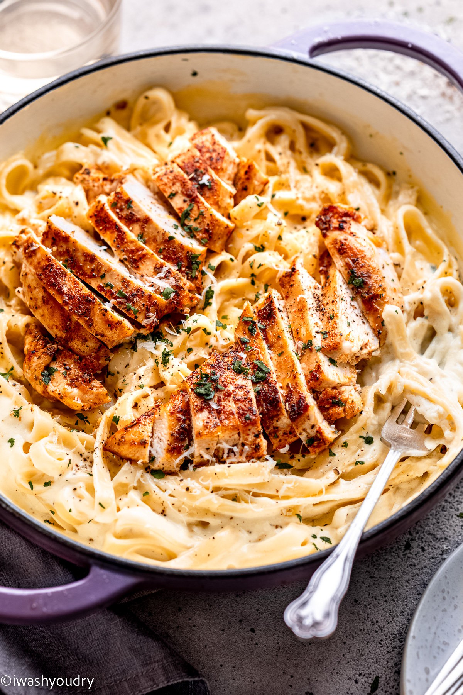

Chicken Alfredo

Dish Description
A creamy and classic dish, chicken alfredo
is a timeless family favorite sure to
satsify everyone's palete.
Ingredients Needed
-
Garlic
-
Heavy cream
-
Salt
-
Pepper
Directions
-
Heat minced garlic and heavy cream
-
Boil pasta of choice
-
Add ingredients together at medium to high heat
-
Cook for 8 minutes, stirring occassionally
-
Let sit for 2 minutes before serving